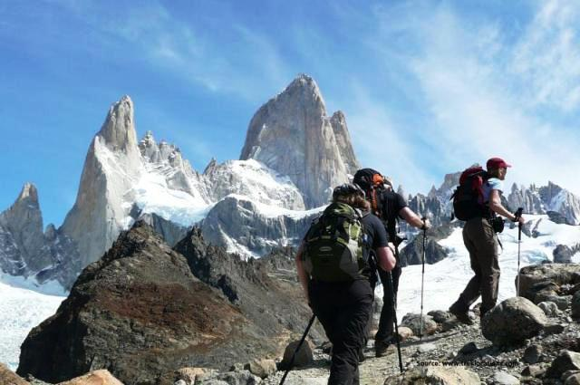
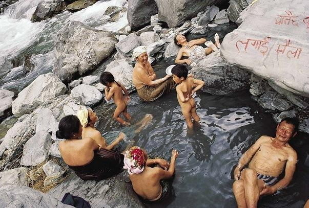
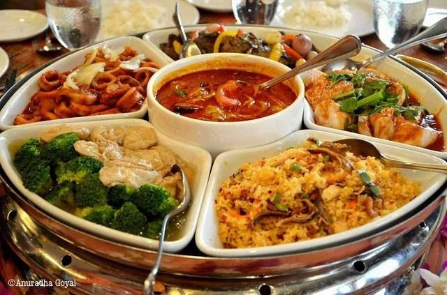
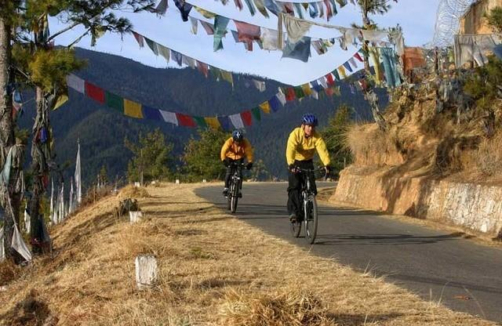
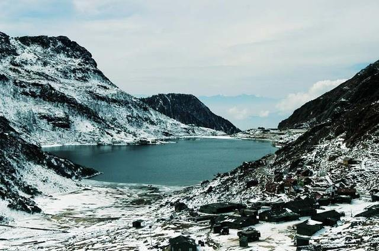

Things To Do
Planning A Trip to Sikkim? Here's the 9 most fun things to do in Sikkim, our very own land of sin
.
Sikkim is known to possess one the most diverse landscapes, and is home to several wildlife sanctuaries. The Kanchenjunga National Park is one of its most notable tourist attractions. Scientists and ecologists are drawn here since the Park is nestled in the Himalayas, protecting the natural habitats of several animals and birds. Sikkim is also famous for its tea plantations. You can stroll through the Temi Tea Garden, watching the local women pluck tea leaves. The Kanchenjunga mountain range in the backdrop just enhances the natural beauty of this gorgeous tea estate.
Go Trekking

Be warned, the trek to Goechala via Dzongri is not for the faint-hearted, or the occasional trekker.
Physical fitness and a little experience in high altitude trekking will definitely help as the oxygen levels drop especially after Dzongri.
People who complete this trek however, speak of the magnificent sunrises and the view of the several snow capped peaks,
most notably the Kanchenjunga.
Take A Dip In The Hot Springs

Sikkim is blessed with several thermal pools containing water high in sulphur, which is believed to have medicinal
properties beneficial for a variety of skin ailments.
Reshi hot springs located near the Rangeet River is a popular place among tourists.
There are many huts available around this region for the ease and comfort of trekkers.
People also frequently wander over to the sacred cave of the occult fairies also known as ‘Kah-do Sang phu’,
located very close to the pools.
Indulge In Sikkimese Cuisine

All that exploring has got to be hard on your tummy.
There are plenty of roadside eateries, and swanky restaurants serving authentic local dishes – from momos,
thukpa, to many novelty preparations.
Sikkim’s food shows the influences of several cultures and travellers should not miss out on this unique culinary experience.

Mountain biking is quite new to Sikkim, but it is quickly making its way to the top of the to do list among the many things
adrenaline junkies come to Sikkim for.
Starting from Gangtok, there are ample routes to suit the needs of each individual – from rocky, steep and treacherous
terrains, to the slow paced countryside route for people interested in taking pictures on the way.

Tsongo Lake is one of the most popular attractions in Gangtok, as it freezes completely during the winters.
Also known as the Changu Lake, it is revered by Buddhists as they say monks used the lake's frozen surface like a
crystal ball and predicted the future by looking into it.
The lake's appearance changes with the seasons, making it a delightful place for photographers throughout the year.
Yak riding is another thing that tourists can try here.